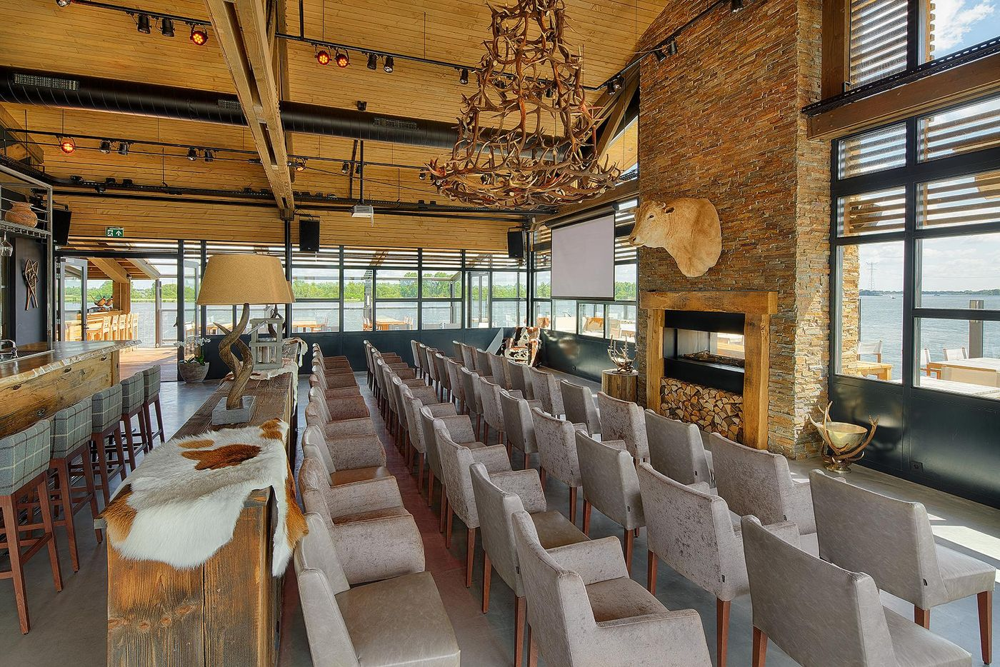
Vergaderen en events aan het water
Vijf zalen met terras en waterzicht, van een boardmeeting met acht tot een bedrijfsfeest met honderden gasten.
Altijd een passende setting
Een boardmeeting vraagt om iets anders dan een kick-off met het hele team, en een training werkt anders dan een heisessie. Bij More-Itz kiest u de ruimte die past: van een klein, geconcentreerd overleg tot een bijeenkomst voor de hele organisatie.
- Board meetings en strategische sessies
- Cursussen, trainingen en heidagen
- Kick-off meetings en productpresentaties
- MT-overleg en projectbesprekingen
- Personeelsfeesten, werkjubilea en nieuwjaarsborrels
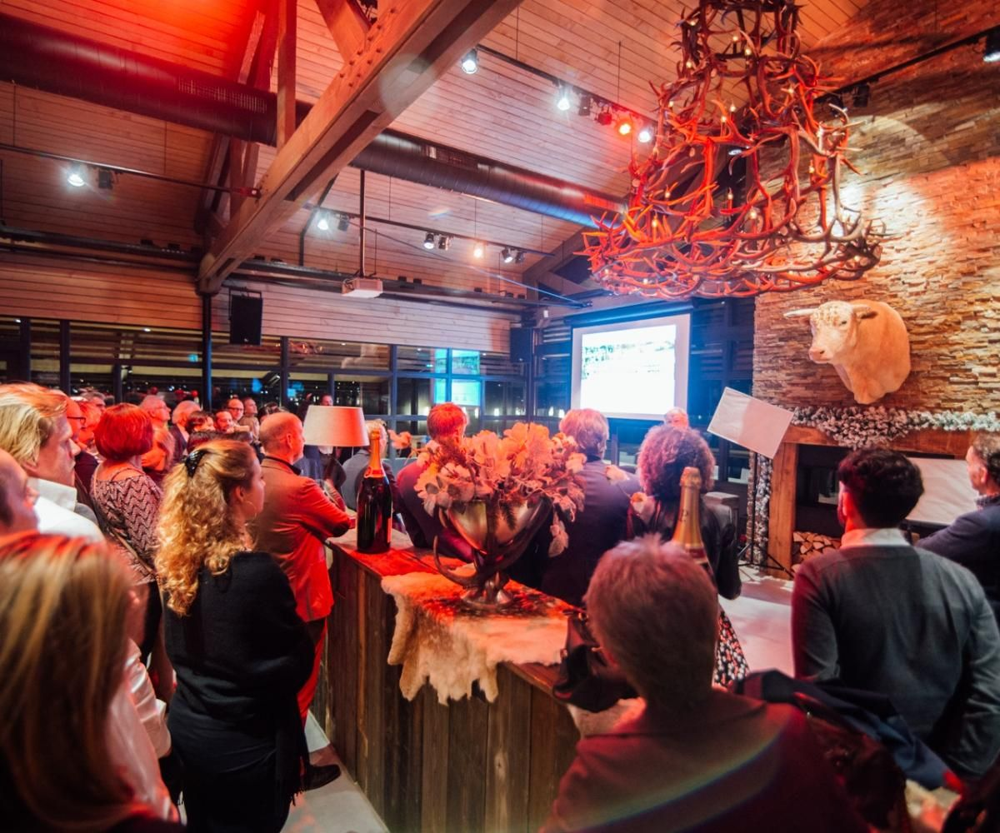
Onze zalen
Elke ruimte is te gebruiken voor vergaderen, private dining of een feest.
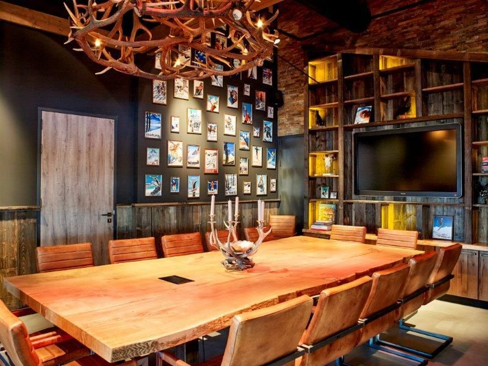
De Bekroonde Boardroom
5 tot 20 personen- Tafel voor 14 personen
- Elektronisch schoolbord, HDMI
- Terras met zicht op het water
- Ook voor private dining
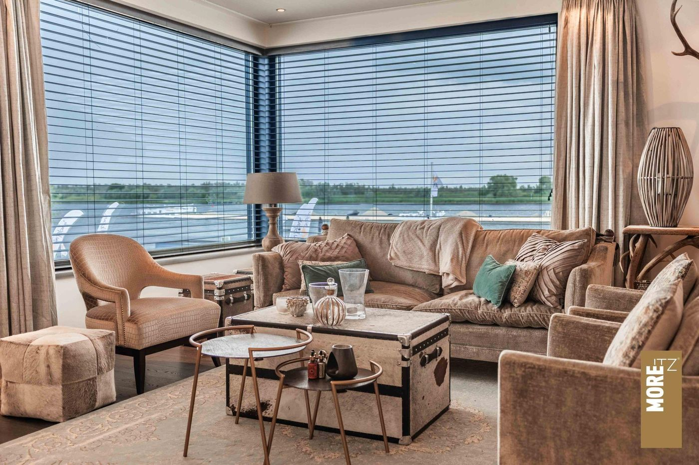
De Huiskamer
7 tot 8 personen aan tafel- Comfortabele banken en stoelen
- Scherm met HDMI
- Eigen bar en kleine keuken
- Terras met zicht op het water
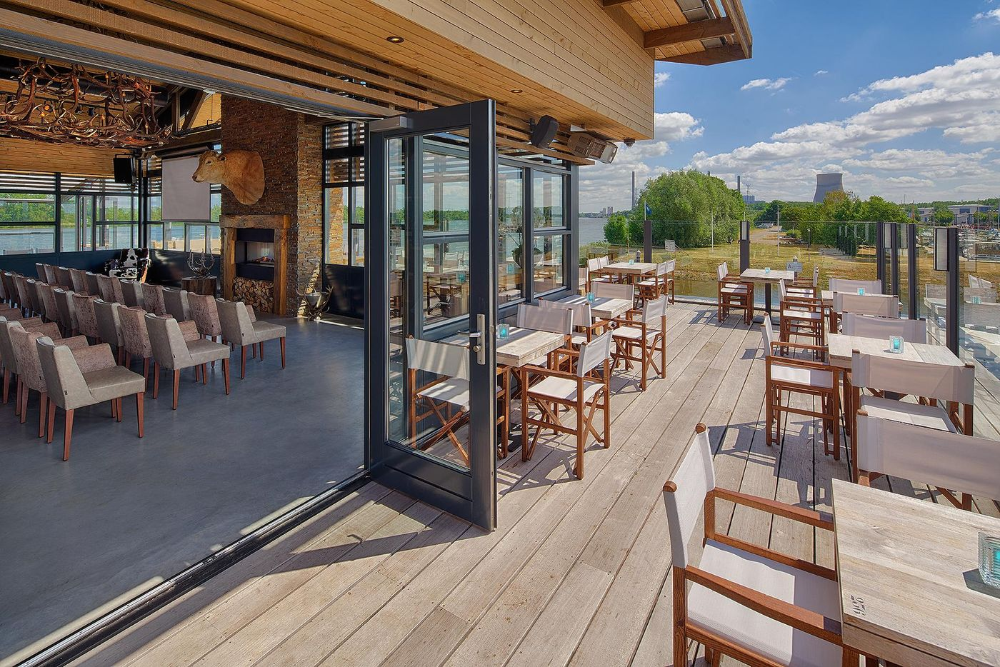
Private Floor
25 tot 110 personen- De hele verdieping exclusief
- Beamer, scherm 2 x 3 m, microfoon
- Eigen binnen- en buitenbar
- Terras rondom met BBQ-keuken
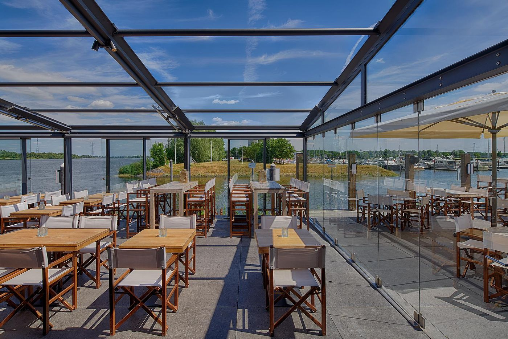
Serre
Tot 200 personen- Direct aan de haveningang
- Dak dat open en dicht kan
- Twee buitenhaarden
- DJ-aansluiting
Het hele pand
Tot 900 gasten, afhankelijk van het weer (bij slecht weer 400 zittend of 600 staand). Met vier (buiten)bars, twee (buiten)keukens, een strandje met 11 bedden, een trouwprieel, zes DJ-aansluitingen en aanlegsteigers op aanvraag.
Catering en techniek geregeld
We maken samen met u een draaiboek. De ruimte wordt naar wens aangekleed en het menu stellen we in overleg op, ook bij dieetwensen.
Catering
- Luxe koffiepauzes en lunchbuffetten
- Business lunch op maat
- À la carte diner of walking dinner
- BBQ-arrangementen op het terras
- Luxe borrel
Faciliteiten
- Snel internet en wifi
- Projectieschermen en beamers
- Geluid en presentatiemiddelen
- Flexibele opstellingen naar wens
- Overnachting via hotels en B&B's in de buurt
Iets erbij op het water of op het land
Door de ligging in de Biesbosch combineert u de vergadering makkelijk met een activiteit.
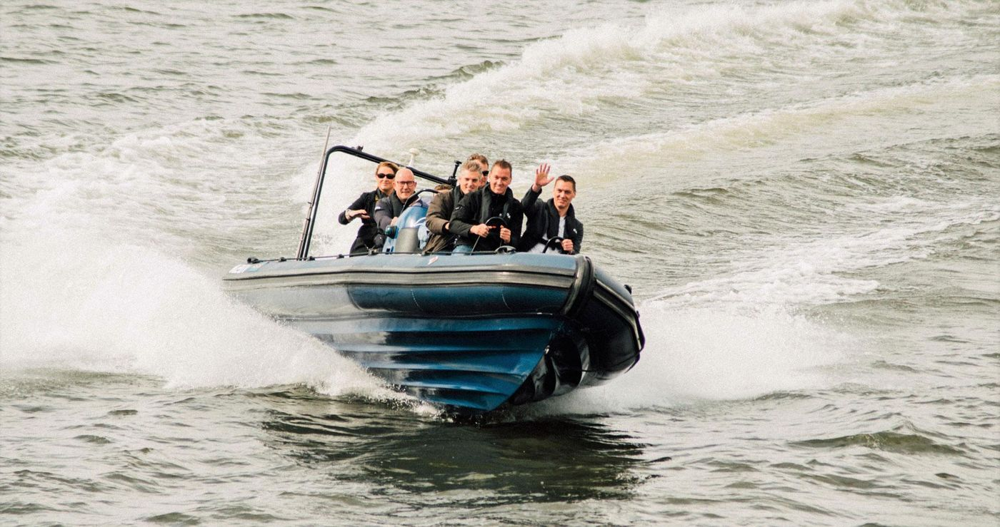
Ribboot
Met 80 tot 100 km/u over het water. Vertrek vanuit More-Itz, of stap op in Rotterdam, Breda of Den Bosch.
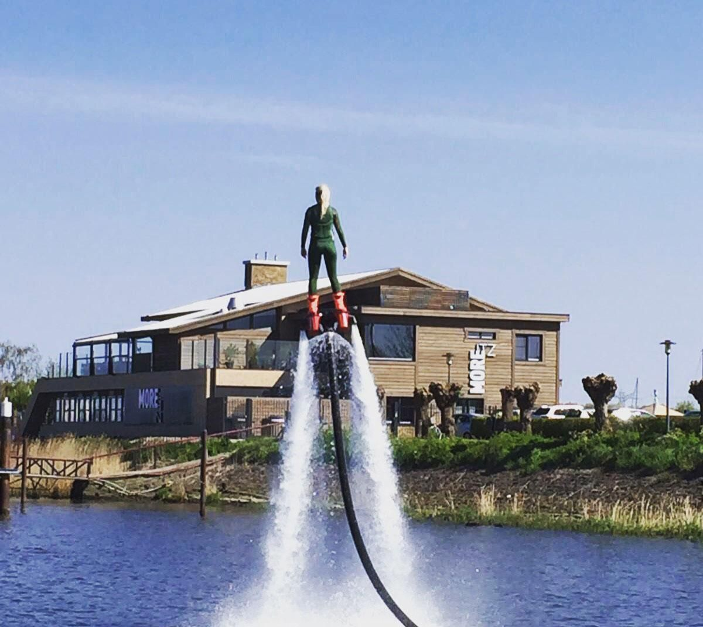
Fly- en wakeboarden
Of waterskiën, bandvaren en suppen. Liever droog blijven? Kijk toe vanaf de pontons.
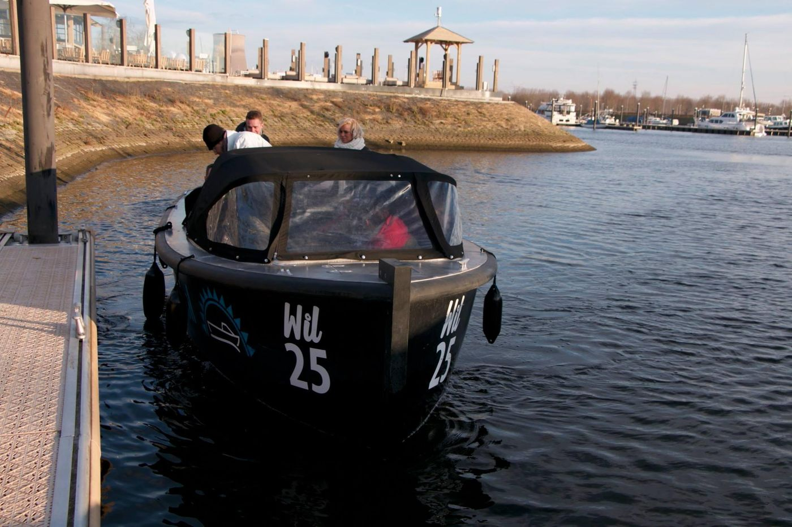
Sloepentocht
Even een frisse neus in de Biesbosch. In de winter met een wintersloepentocht en kaasfondue na afloop.
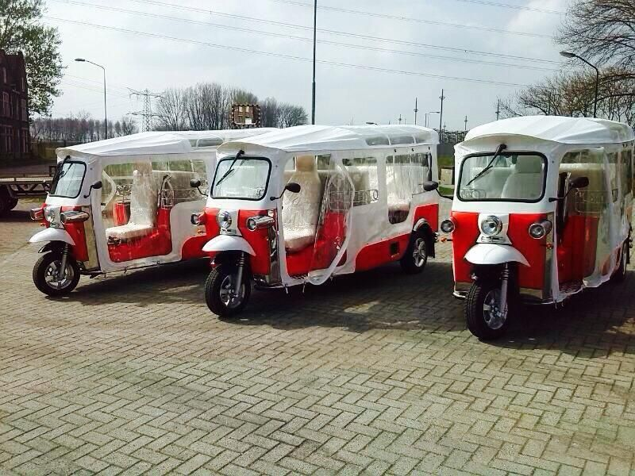
Tuk-tuk challenge
Met tuk-tuks of scooters en GPS door het rivieren- en dijkenlandschap. Wie is als eerste terug?
Ook mogelijk: een wandeling door de Biesbosch, een stadswandeling in Geertruidenberg of Heusden, of een escaperoom op de bovenverdieping.
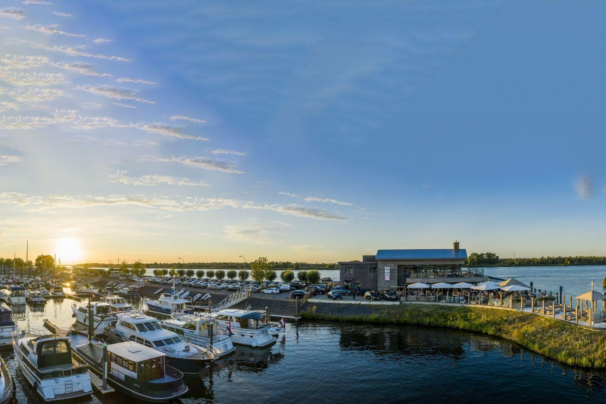
Goed bereikbaar
More-Itz ligt centraal: binnen 20 tot 40 minuten bent u er vanaf Rotterdam, Dordrecht, Breda en Den Bosch. Vanuit Amsterdam en Brussel is het minder dan een uur.
Voor kleine groepen is er parkeerplek direct naast het pand. Grotere groepen parkeren gratis rond de jachthaven, op 4 minuten lopen, met een haal- en brengservice.
Offerte aanvragenReserveren of offerte aanvragen
Een tafel voor vanavond of een event voor 200 gasten: laat weten wat u zoekt, dan nemen we snel contact met u op.
Liever even bellen?
We denken graag mee over uw dag, van zaal en menu tot een activiteit op het water.